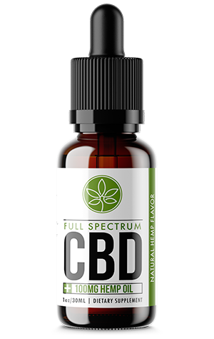

Comment le full spectrum CBD peut changer la vie de centaines de milliers de personnes et pourquoi il peut le faire
Note de l'éditeur. De plus en plus de personnes dans le monde découvrent les changements positifs que le full spectrum CBD peut apporter à leur vie. De nombreuses vedettes telles que Céline Dion, Alanis Morissette, Matthew Perry, Yannick Bisson, William Shatner et d'autres parlent des avantages du full spectrum CBD. Pour comprendre la question et trouver des réponses définitives, nous nous sommes tournés vers un spécialiste bien connu, le docteur Alain Vadeboncoeur. Il a gentiment accepté de donner l'interview, que nous portons à votre attention.
Dr. Alain Vadeboncoeur est un médecin, urgentologue et vulgarisateur scientifique canadien habitant à Montréal. Le Dr Vandeboncoeur est le chef de l'Urgence de l'Institut de cardiologie de Montréal, il est actif dans le milieu de la recherche et il intervient fréquemment dans les médias de langue française pour dissiper des mythes sur des enjeux de santé. Il est aussi auteur et homme de théâtre. Son engagement social à l'égard du système de santé public l'a rendu plus visible dans l'actualité québécoise.
Editeur : Première question - dans quelles situations le full spectrum CBD aide-t-il ?
Alain Vadeboncoeur : Curieusement, la réponse n'est pas si simple. Le full spectrum CBD est unique puisqu'il peut aider avec de nombreuses maladies et problèmes de santé. En bref : pour les inflammations articulaires et les douleurs musculaires, le surpoids et l'hyperglycémie, pour les troubles anxieux et les maladies du système musculo-squelettique, pour les troubles cérébraux, la dépression, le stress, la faible vitalité et le manque de sommeil.
Editeur : Cela semble trop fantastique. Je ne l'aurais pas cru sans les nombreuses preuves et témoignages de personnes en qui j'ai confiance.
Alain Vadeboncoeur : Croyez-le ou non, je vais maintenant vous expliquer comment et pourquoi le full spectrum CBD fonctionne. Sans entrer dans les détails, la clé pour comprendre les avantages du full spectrum CBD est un réseau de récepteurs dans nos cellules, que l'on peut appeler le système endocannabinoïde. Il maintient l'équilibre dans le corps en libérant des cannabinoïdes en réponse aux toxines de notre corps. Avec le temps, ce système s'épuise et sa capacité à libérer des cannabinoïdes diminue. Et le corps ne peut plus faire face aux toxines uniquement grâce à des ressources internes.
Et le full spectrum CBD, ce sont les mêmes cannabinoïdes que le corps n'en a plus assez. En utilisant le full spectrum CBD, nous aidons notre système endocannabinoïde à rétablir l'équilibre déséquilibré et à normaliser le corps.
Il y a littéralement une demi-heure, j'ai terminé le rendez-vous de mon ancienne patiente, Marie S. Elle a 45 ans et elle a tout un tas de maladies. Elle se plaignait de douleurs articulaires, elle s'inquiétait d'être en surpoids et d'hyperglycémie. Elle avait souvent mal à la tête. Sa situation n'était pas catastrophique, mais la vie était dure pour elle. Sur mon conseil, elle a commencé à prendre du full spectrum CBD il y a environ un mois. Et aujourd'hui, elle est venue me remercier, puisque la qualité de sa vie s'est considérablement améliorée. Les douleurs dans le dos et les articulations ont disparu, les maux de tête ont disparu, la tension artérielle et le taux de sucre ont diminué. L'excès de poids a également diminué, mais pas aussi rapidement qu'elle le souhaiterait. Mais je crois que 5 kg par mois sans régime ni exercices est un excellent résultat. Et j'ai beaucoup de patients comme elle.
Editeur : Qui d'autre full spectrum CBD aidera-t-il ?
Alain Vadeboncoeur : C'est bon pour les personnes de plus de 30 ans, c'est sûr. Il est important de souligner à nouveau que le full spectrum CBD est un produit sûr et entièrement naturel qui n'a pas de contre-indications. Avec l'âge, nous commençons tous à nous sentir moins bien que dans notre jeunesse, alors pourquoi ne pas aider votre corps et arrêter ce processus ? De plus, il est peu coûteux et sûr.
Pour ne pas être infondé, je citerai une partie d'un article scientifique sur le full spectrum CBD, où il y a une réponse à cette question. Gardez simplement à l'esprit que ce n'est pas une liste complète.
Il est cliniquement prouvé que le full spectrum CBD :
- Réduit la douleur et l'inflammation articulaire.
- Réduit l'anxiété sociale, les troubles cognitifs et l'inconfort chez les patients atteints de trouble d'anxiété généralisée (TAG).
- Réduit le risque de cancer en désactivant les gènes impliqués dans le développement de la tumeur.
- Lutte contre les troubles neurodégénératifs comme la maladie d'Alzheimer en éliminant la plaque qui bloque les signaux neurologiques.
- Le full spectrum CBD stimule la formation osseuse et inhibe la perte osseuse. Il peut être utilisé pour traiter l'ostéoporose et d'autres maladies du système musculo-squelettique.
- Réduit la dépendance aux cigarettes, améliore la qualité du sommeil, régule la glycémie et réduit la résistance à l'insuline.
- Améliore les symptômes de la sclérose en plaques en assurant une protection à long terme des neurones.
- Empêche l'obésité et aide à perdre du poids.
Editeur : Est-ce légal ?
Alain Vadeboncoeur : Le full spectrum CBD n'est pas un stupéfiant et n'a aucune propriété psychoactive. Vous n'avez pas besoin d'une ordonnance pour l'acheter.
Editeur : Est-ce que c'est sûr ?
Alain Vadeboncoeur : Le full spectrum CBD est considéré comme totalement sûr, et ce fait n'est contesté par personne. Même les sociétés pharmaceutiques qui détestent le full spectrum CBD parce qu'il devient une alternative peu coûteuse et efficace à leurs médicaments coûteux et dangereux. Le seul problème est que tous les sites ne vendent pas de vrai full spectrum CBD, il est facile de tomber sur un faux. Mais sur ce site, c'est définitivement réel.
Editeur : Si le full spectrum CBD fait des miracles comme celui-ci, pourquoi tout le monde n'en parle-t-il pas ?
Alain Vadeboncoeur : Eh bien, tout d'abord, le full spectrum CBD gagne en popularité chaque jour puisqu'il a déjà aidé des millions de personnes. Et deuxièmement, les sociétés pharmaceutiques font d'énormes efforts pour ralentir la diffusion de ces informations. Pouvez-vous imaginer combien d'argent ils sont susceptibles de perdre si les gens commencent à utiliser des remèdes naturels peu coûteux au lieu de leur chimie nocive coûteuse avec de nombreux effets secondaires?

Note de l'éditeur. Après l'interview, je
réfléchissais beaucoup à ce que j'avais appris sur le full spectrum CBD.
Bien sûr, je crois Alain Vadeboncoeur, je crois aux
nombreuses critiques de personnes célèbres. Mais quand même,
j'ai décidé de tout vérifier à nouveau. Et je me suis tourné
vers un vieil ami à moi, un Ancien maire de Montréal Denis
Coderre, qui m'a dit plus d'une fois qu'il utilisait du
full spectrum CBD et le trouvait merveilleux.
Il a répondu à un e-mail dans l'heure, bien qu'il réponde
généralement très longtemps en raison de son horaire très
chargé. Je vais citer la lettre dans son intégralité, à
l'exception de quelques points personnels qui ne sont pas
pertinents.
" C'est une coïncidence incroyable que tu m'aies écrit en ce
moment. Parce que je prends moi-même du full spectrum CBD. Et j'ai
l'opportunité de voir les résultats basés sur ma propre
expérience. Voici les changements que j'ai remarqués en moi. La
douleur dans les articulations et les muscles a disparu (et cela
a continué même après le refus des analgésiques, sur lequel je
n'ai pas immédiatement décidé). L'état de santé général s'est
amélioré, j'ai commencé à mieux dormir, à me réveiller plus
facilement, le sentiment d'anxiété et le sentiment que la vie
est sur le point de finir ont disparu. Je me sens plus active et
mes pensées sont devenues plus claires. Comme tu le sais,
j'avais des problèmes articulaires ainsi que des problèmes de
nutrition. J'ai aussi essayé d'arrêter de fumer pendant des
années. Mais ce n'était pas un succès. Alors, mon ami,
maintenant tout a changé ! J'ai commencé à suivre une
alimentation saine, à arrêter de fumer et lorsque mes
articulations ont cessé de me faire mal, j'ai même commencé à
faire du sport. J'ai essayé différents types de sports actifs,
mais, finalement, j'ai décidé de nager et de marcher. Je le fais
quand je veux. Curieusement, le désir surgit souvent, une vie
active est cool.
Je te suis très reconnaissant de m'avoir posé des questions sur
le full spectrum CBD, puisque depuis longtemps je cherchais une opportunité de
dire des choses importantes pour moi. Tu ne peux rien obtenir si
tu ne donnes pas en retour. Il ne s'agit pas seulement de
relations personnelles. Il s'agit aussi de tes relations avec le
monde. Telle est ma philosophie, donc cela ne me dérangeait
absolument pas de prendre le temps de te répondre et de le faire
le plus vite possible.
Je suis devenu un féroce défenseur du full spectrum CBD pour plusieurs raisons
:
Le remède aide vraiment et rend la vie meilleure. La douleur
s'estompe, l'anxiété diminue, le sommeil s'améliore, l'énergie
augmente - avec le full spectrum CBD, la vie de tout le monde est meilleure
que sans celui-ci.
C'est un produit organique naturel sans composants chimiques
dangereux.
C'est un remède bon marché, ce qui est également important - les
personnes à faible revenu peuvent également se le permettre.
Je n'ai aucun intérêt commercial ; je ne fabrique ni ne vends de
full spectrum CBD. Je n'ai rien à voir avec le site sur lequel
j'ai commandé et je commande moi-même du full spectrum CBD (il y a pas mal
de sites de ce type, mais il y a toujours un risque d'obtenir un
faux, et j'en suis sûr, c'est pourquoi je donne le lien). C’est
tout ce que je voulais dire. J'espère que j'ai aidé. "
À {city:fr}, l'offre spéciale est valable jusqu'au inclus ! Pour obtenez 2 bouteilles gratuites, il vous suffit de remplir un formulaire sur le site officiel de “ Hemp Max Lab” et d'attendre un appel pour confirmer votre commande.
NOTE DE LA RÉDACTION: Les fournisseurs officiels de Hemp Max Lab™ ont accepté de fournir paquets de bouteilles gratuits exclusivement à nos lecteurs pendant une période limitée.
(LES BOUTEILLES SONT VENDUES TOUS LES JOURS
- COMMANDEZ MAINTENANT AVANT QU'ELLES SONT ÉPUISÉES)
IMPORTANT: Lors d'essais cliniques, il a été prouvé que vous DEVEZ utiliser ce produit TOUS LES JOURS pour obtenir des résultats similaires.
 Update:
Il ne reste plus que 2 échantillons.
Fin de la promotion:
Update:
Il ne reste plus que 2 échantillons.
Fin de la promotion:


Je comprends parfaitement l'auteur, j'ai moi-même souffert d'arthrite rhumatoïde pendant longtemps, c'était terrible, les médicaments n'ont pas beaucoup soulagé. Le full spectrum CBD a énormément aidé, mais pas tout de suite.

C'est intéressant.

Est-ce vraiment légal ?
oui)
J'ai essayé de gérer l'anxiété et cela m'a aidé, je suis plus détendu maintenant. Il y avait des crises de panique. Maintenant elles ont disparu.
Ça aide à se calmer, je suis d'accord. Mais soulager la douleur et l'inflammation est plus important, je pense.
Le full spectrum CBD est de plus en plus populaire, que vont en faire les grands groupes pharmaceutiques ? Ils perdent beaucoup d'argent.

Que peuvent-ils faire ? Ce qui aide des millions de gens ne peut être que ralenti, ne peut pas être complètement interdit. Le monde ne sera pas le même, les gens ouvriront les yeux et verront la vérité.
La douleur a disparu en une semaine et c'est très bon pour moi, parce que rien ne m'aidait. Et quand cela a aidé, j'avais un égarement de l'esprit et une dépression. C'est mieux que la douleur, mais toujours désagréable. Le full spectrum CBD aide sans effets secondaires.

Je ne sais pas comment, mais le full spectrum CBD m'a aidé à arrêter de fumer. C'est fantastique, j'ai essayé différentes méthodes pendant 10 ans et j'ai toujours échoué. Aujourd'hui, j'ai un record - une année sans tabac !

Je suis sûr que le full spectrum CBD sera bientôt dans chaque maison. Légal, inoffensif et très utile - n'est-ce pas ce dont nous avons tous besoin ? Je l'utilise moi-même depuis trois mois, en commençant après une fracture du bras, mon médecin me l'a conseillé. Puis j'ai remarqué que mon état général s'est amélioré. Au fait, j'achète du full spectrum CBD là-bas)

Un nutritionniste m'a conseillé d'utiliser le full spectrum CBD pour améliorer la digestion et normaliser la glycémie. Maintenant je l'utilise.

le full spectrum CBD m'aide beaucoup avec mes problèmes de sommeil. J'avais des problèmes d'endormissement et les somnifères m'ont sauvé. Mais après cela, il était difficile de se réveiller. Le full spectrum CBD ne cause pas de tels problèmes.

merci !
Je me réveille facilement le matin sans full spectrum CBD. Bien sûr, j'ai la moitié de l'âge de l'auteur, mais il me semble que ce n'est pas la question, mais par rapport à la vie.